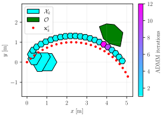
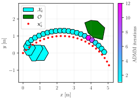

zonoopt documentation
ZonoOpt
This C++ header library provides classes and tailored optimization routines for zonotopes, constrained zonotopes, and hybrid zonotopes. To use, #include "ZonoOpt.hpp". All classes and methods are implemented using sparse linear algebra via the Eigen library. Generators may optionally have range [0,1] instead of [-1,1].
Python bindings can be installed from PyPI with pip install zonoopt. To build the bindings from source, use pip install .. Note that a C++ compiler is required to build from source, and the Eigen submodule must be checked out (can be accomplished by running python3 update_submodules.py).
More information about ZonoOpt can be found in the the following publication. Please cite this if you publish work based on ZonoOpt: Robbins, J.A., Siefert, J.A., and Pangborn, H.C., “Sparsity-Promoting Reachability Analysis and Optimization of Constrained Zonotopes,” 2025. https://arxiv.org/abs/2504.03885.
Auto-generated API documentation is available below.
 

Contents:
- ZonoOpt Module
BoxConZonoEmptySetHybZonoIneqTermIneqTypeInequalityIntervalOptSettingsOptSolutionPointZonoaffine_map()cartesian_product()constrain()get_vertices()halfspace_intersection()intersection()intersection_over_dims()interval_2_zono()make_regular_zono_2D()minkowski_sum()plot()pontry_diff()project_onto_dims()set_diff()union_of_many()vrep_2_conzono()vrep_2_hybzono()zono_union_2_hybzono()